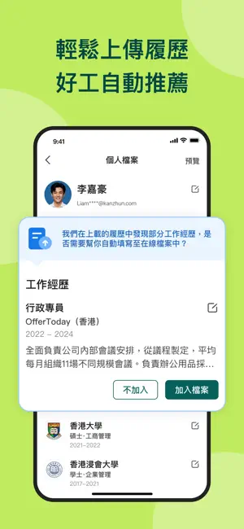

OfferToday 藏得真深：五个大多数人不知道的 AI 招聘技巧
OfferToday 不只是刷职位的工具。把 DeepSeek R1 翻到底，发现了 AI 简历优化、聊天草稿生成、Web 端通知绕路等五个官方没怎么宣传的隐藏功能。
引子：你以为它只是个刷职位的 App？
老实说，最初我也这么以为。OfferToday 就是香港求职者手机里多一个招聘 App，早上醒来刷一眼新职位，看到合适的给招聘者发个消息，没什么特别的。直到某天我把它翻了个底朝天——从 App 设置一路钻到隐私条款里提到的底层技术，才发现这个号称用了 DeepSeek R1 的招聘平台，藏了好几个官方没怎么宣传的冷门功能。
这些功能不是摆设，是真的能帮你多拿到面试机会、少走弯路的那种。整理了五个挖出来的，一个个讲。
隐藏功能一：AI 简历定向重排，藏在编辑页的角落里
offertoday官网说自己用 DeepSeek R1 做职位匹配，但大部分人只感受到了"推荐流比别的 App 准"——没人注意到简历编辑页里藏着一个小按钮。
打开简历编辑界面，往下滑到工作经历那一段，右上角有个不起眼的小图标，点进去就是 AI 简历辅助。它做的事情比普通的"润色"狠多了：你先在推荐流里点开一个目标职位，切回简历编辑页，AI 会自动识别这个职位的核心要求（比如"社群运营""10 万粉经验""金融行业"），然后把你简历里最相关的经历重新排序放到最前面，甚至帮你补一段针对这个职位的自我介绍草稿。
我之前投一个社群运营岗，简历里把之前做过的美食社群放在了第三位，AI 直接帮我提到了第一条，还在末尾补了一句"运营 10 万+ 粉丝社群期间，策划过 50+ 次线下活动"——那段经历我自己都快忘了能这么写。这个功能藏得真深，App Store 评论里都只有零星几个人提到。
隐藏功能二：聊天首条消息草稿，不用自己想开场白了
OfferToday 的即时聊天是它的核心优势，但每次给招聘者发第一条消息都是个头疼事——说什么不会太生硬？有没有什么点能一下抓住对方？
藏在聊天界面发送框的左侧，有个"帮我写首条消息"的小图标。点一下，AI 会自动抓取对方发布的职位描述，生成一段三句话的开场白：第一句点明你对这个职位的兴趣，第二句从简历里挑一个最匹配对方要求的经历，第三句引导对方进一步沟通。
我试过几次，质量参差不齐——对技术岗和运营岗匹配度很高，对餐饮零售这类蓝领职位就有点过于正式，需要微调一下。但哪怕只给你一个骨架，也比对着空白输入框发呆强太多。这个功能官方帮助中心完全没提，纯粹是我瞎点出来的。

隐藏功能三：Web/H5 端通知不能自助调，但有办法绕开
这个不是"功能"，是个很多人踩的坑——你如果主要用 OfferToday 的网页版或 H5 小程序，会发现通知设置根本找不到入口，FAQ 里说要联系客服，回复周期 1 到 5 个工作日。
解决方案其实很简单：手机上从官方下载装个 OfferToday App，在 App 里把通知偏好设置好就行了。App 端的通知设置不受 Web 端限制，而且聊天消息和面试邀约的通知是全局同步的——我自己就是电脑上用网页刷职位、手机 App 守着聊天消息的模式，两个端互不干扰。
值得一提的是，OfferToday 建议至少保持聊天消息和面试邀约的通知开启，每日职位推送太频繁可以关掉。毕竟错过一个面试邀约，可能就是错过一份工作。
隐藏功能四：AI 辅助面试邀约协调，新版本悄悄上线
面试邀约通常是招聘者在聊天里口头提一句，你得自己凑时间。但 OfferToday 2.0xx 系列的新版本里，偷偷加了一个 AI 协调时间的功能——当招聘者发出正式面试邀请时，AI 会自动弹出两三个候选时间段让你选，选中后会自动回传给对方。
这个功能在更新日志里只提了一句"优化面试安排流程"，几乎没人注意到。我自己没赶上，但后来去offertoday文档翻了一下用户反馈看，金融和 IT 行业的招聘者用得比较多，蓝领职位的面试还是以口头沟通为主。
隐藏功能五：账号删除真的可以自己来，路径有点深
很多人担心招聘 App 拿到自己的手机号和简历信息，想卸载之前先删账号，但 OfferToday 的删除路径藏得比较深。
具体步骤：登录 App → 个人中心（Profile）→ 右上角 Settings → Account Settings → 滑到最底部找到 Delete Account。点进去之后会弹一个警告说"此操作不可逆"，确认就好。
注意两点：一是删除前先把聊天记录里有用的面试信息截图保存，OfferToday 不做本地备份；二是如果你用同一个手机号注册过其他平台（比如直品科技旗下的其他产品），删 OfferToday 不会联动删除，这点隐私政策里写得比较清楚。
一个提醒：几个别踩的坑
挖隐藏功能的同时也踩了几个坑，顺手提一下：
Web/H5 通知的客服真的慢。如果 App 端也没发通知，别等客服，自己查一下手机系统设置里 OfferToday 的通知权限是不是被关了——iOS 在"设置 → 通知 → OfferToday"里看，Android 在"应用程序 → OfferToday → 通知"里。大部分"收不到通知"的问题都是系统级权限被关了，不是 OfferToday 的锅。
删除账号真的不可逆。别手贱点着玩。我见过有人想测试一下流程，结果真删了，重新注册之后之前的聊天记录和简历全没了。
AI 匹配不是万能的。DeepSeek R1 再强，也只是根据你填的简历内容做推理。如果你简历里的关键词和目标职位对不上，AI 也帮不了你——先把简历基础内容填扎实，再用 AI 优化。
收尾：把它用透
OfferToday 不是一个"装了就不管"的工具。它用 DeepSeek R1 做底层引擎，但大部分人只用到了最表面的推荐流。把这五个隐藏功能摸清楚，简历匹配更准、沟通更顺畅、面试机会不会漏、隐私也能自己掌控——这才是把一个招聘 App 用透的姿势。
这套资料在三个仓库都能拿到，GitHub是主力更新源，国内访问Gitee更快，GitCode作为备份镜像，内容同步更新不落下每一处改动。